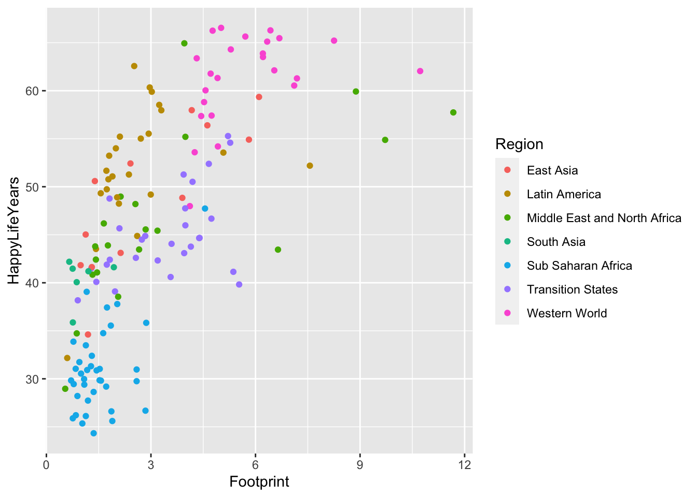
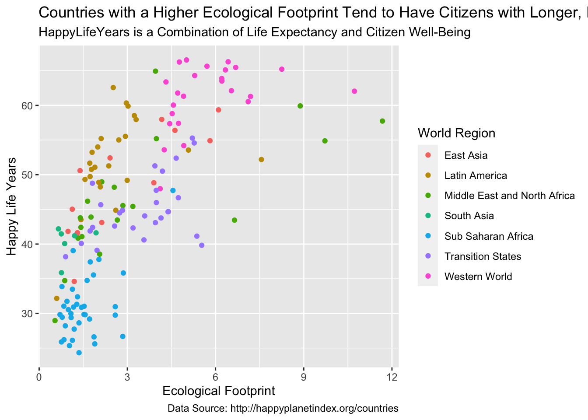
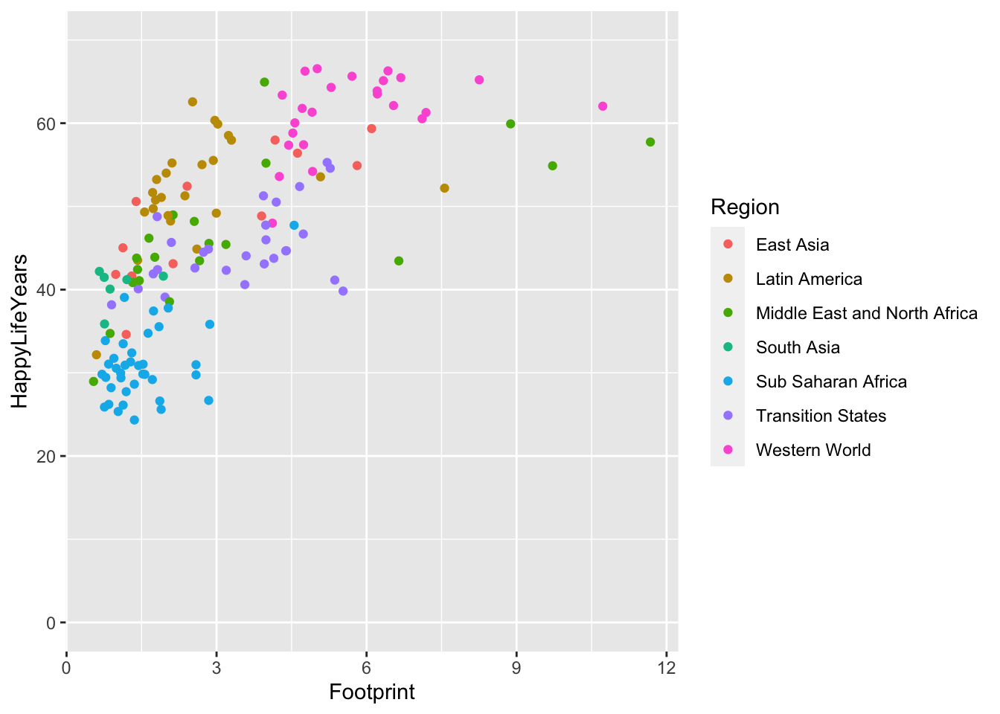
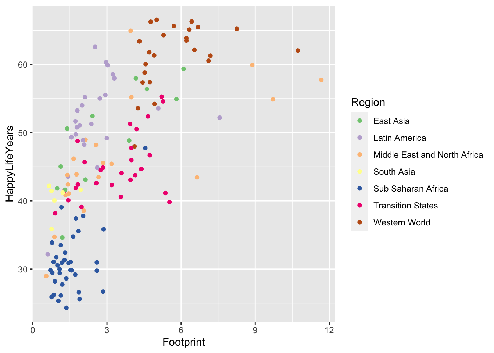
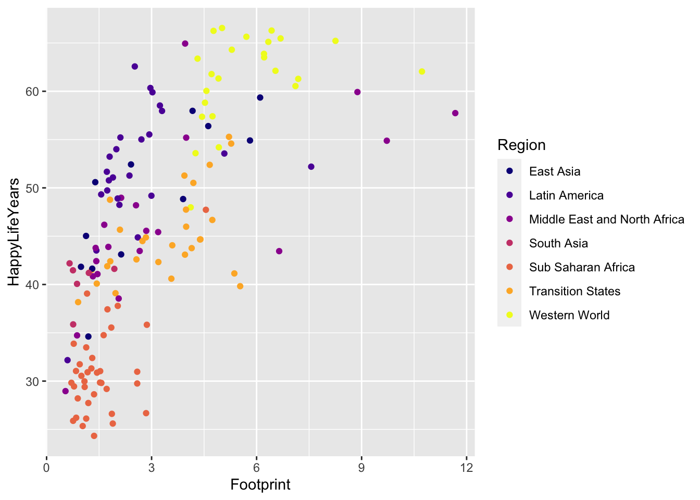
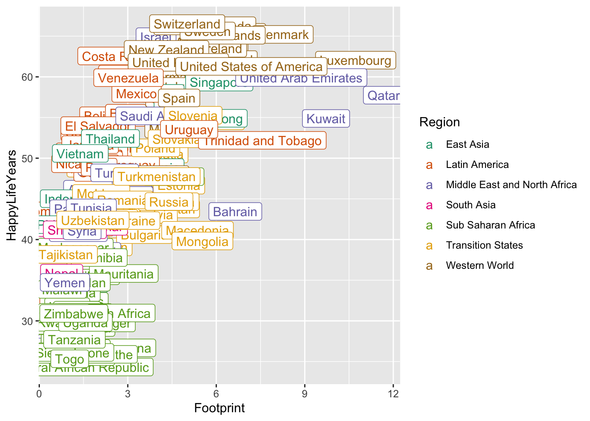
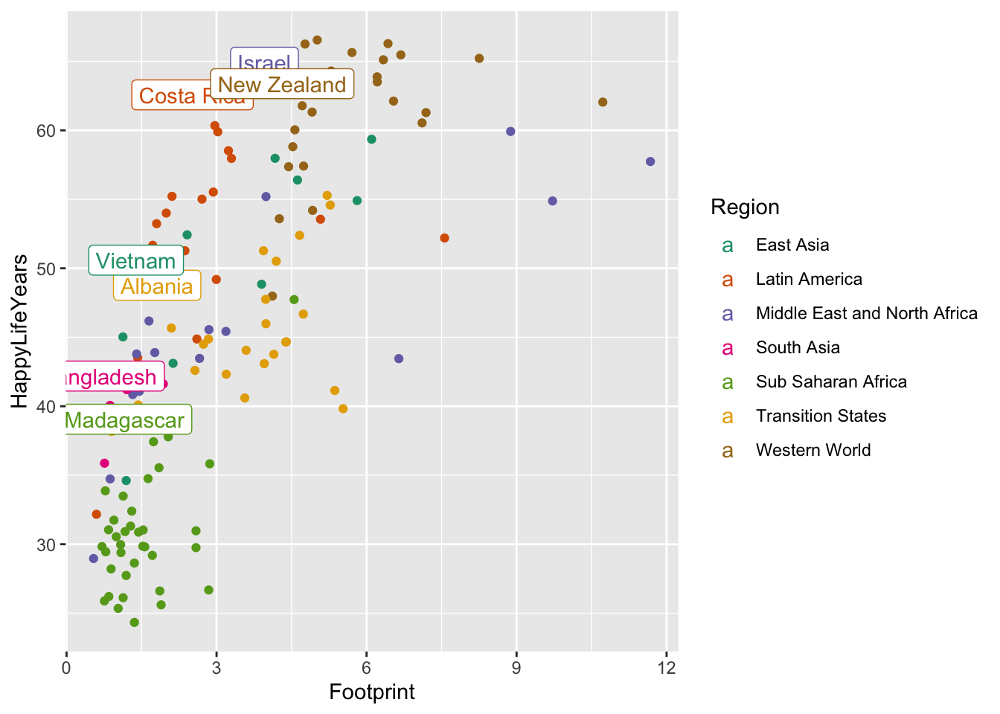
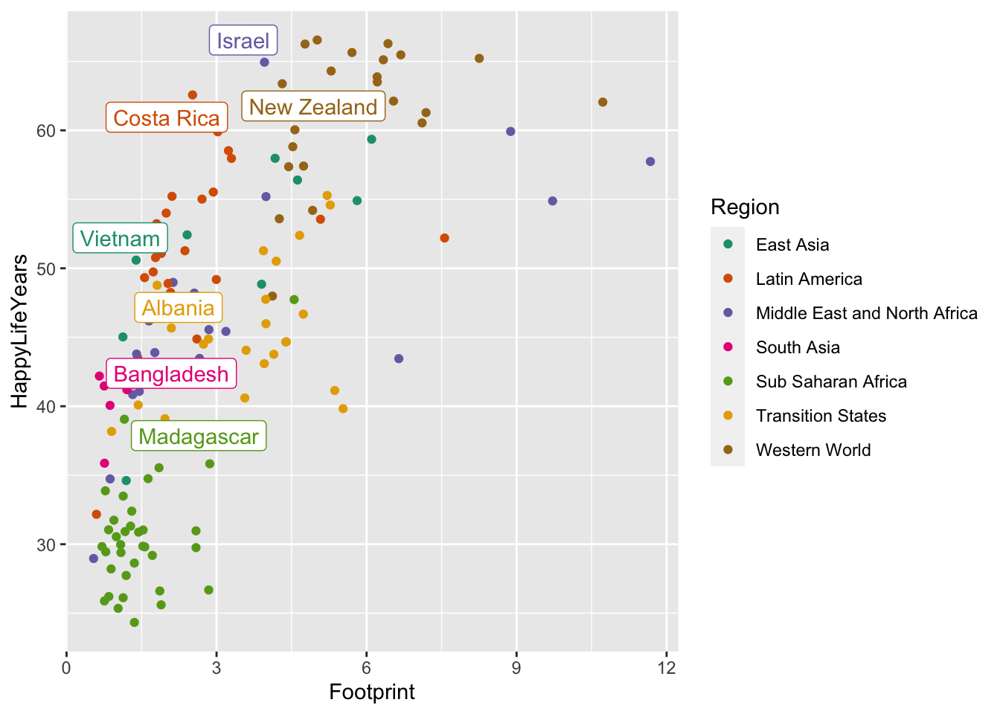
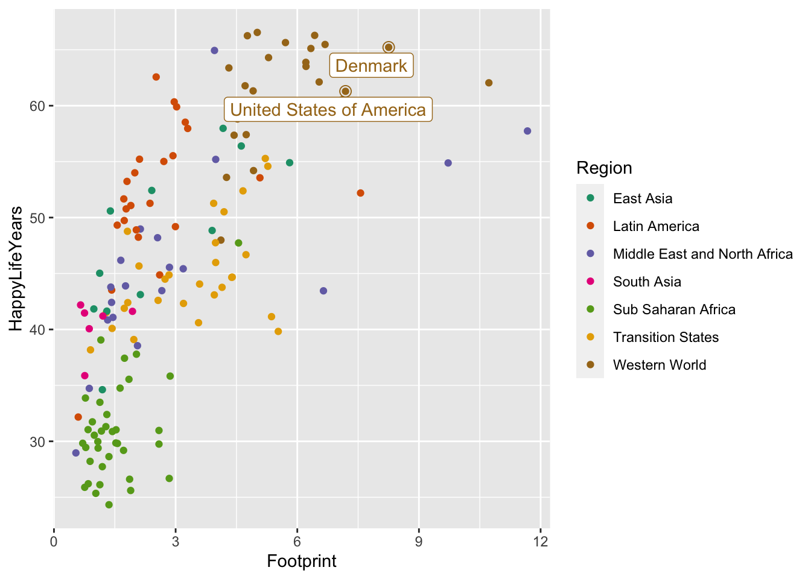
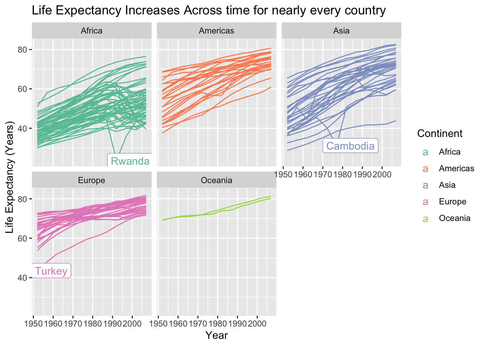

Chapter 6 Communication with RMarkdown
Goals:
Explain what reproducibility means and explain why it’s important for analyses to be reproducible.
Explain why
R Markdownprovides more tools for making analyses reproducible than baseRwith Microsoft Word and than Microsoft Excel.Use the Code Options and the
MarkdownText Options to modify anR Markdownfile so that it knits to a readable, professional .html file.Use titles, labels, colour scales, annotations, and themes to make your plots easy to read, including for people with Colour Vision Deficiency.
Overall: If you’re making some quick plots just for you, some of the things on communication won’t apply. But, if you’re planning on sharing results (usually you are, eventually), then communication tools become much more important.
6.1 Reproducbility
We’ve been using R Markdown for a while now, but have not yet talked about any of its features or how to do anything except insert a new code chunk. By the end of this section, we want to be able to use some of the R Markdown options to make a nice-looking document (so that you can implement some of these options in your first mini-project).
Reproducibility is a concept that has recently gained popularity in the sciences for describing analyses that another researcher is able to repeat. That is, an analysis is reproducible if you provide enough information that the person sitting next to you can obtain identical results as long as they follow your procedures. An analysis is not reproducible if this isn’t the case.
R Markdown makes it easy for you to make your analysis reproducible for a couple of reasons:
an
R Markdownfile will not knit unless all of your code runs, meaning that you won’t accidentally give someone code that doesn’t work.R Markdowncombines the “coding” steps with the “write-up” steps into one coherent document that contains the code, all figures and tables, and any explanations.
6.1.1 R Scripts vs. R Markdown
We’ve been using R Markdown for the entirety of this course. But, you may have noticed that when you go to File -> New File to open a new R Markdown file, there are a ton of other options. The first option is R Script. Go ahead and open a new R Script file now.
The file you open should be completely blank. An R Script is a file that reads only R code. It cannot have any text in it at all, unless that text is commented out with a #. For example, you could copy and paste all of the code that is inside a code chunk in a .Rmd file to the .R file and run it line by line.
So, what are the advantages and disadvantages of using an R Script file compared to using an R Markdown file? Let’s start with the advantages of R Markdown. R Markdown allows you to fully integrate text explanations of the code and results, the actual tables and figures themselves, and the code to make those tables and figures in one cohesive document. As we will see, if using R Scripts to write-up an analysis in Word, there is a lot of copy-pasting involved of results. For this reason, using R Markdown often results in more reproducible analyses.
The advantage of an R Script would be in a situation where you really aren’t presenting results to anyone and you also don’t need any text explanations. This often occurs in two situations. (1) There are a lot of data preparation steps. In this case, you would typically complete all of these data prep steps in an R script and then write the resulting clean data to a .csv that you’d import in an R Markdown file. (2) What you’re doing is complicated statistically. If this is the case, then the code is much more of a focus than the text or creating figures so you’d use an R Script.
We will “demo” a reproducible analysis in class on political data.
6.1.2 Spell-Checking
If using R Markdown for communication, you probably want to utilize its spell-check feature. Go to Edit -> Check Spelling, and you’ll be presented with a spell-checker that lets you change the spelling of any words you may have misspelled.
6.1.3 Exercises
Exercises marked with an * indicate that the exercise has a solution at the end of the chapter at 6.5.
What’s the difference between
RandR Markdown?Why is an
R Markdownanalysis more reproducible than the baseRscript analysis?Why is an
R Markdownanalysis easier to make more reproducible than an analysis with Excel?Your friend Chaz is doing a data analysis project in Excel to compare the average GPA of student athletes with the average GPA of non-student athletes. He has two variables: whether or not a student is a student athlete and GPA. He decides that a two-sample t-test is an appropriate procedure for this data (recall from Intro Stat that this procedure is appropriate for comparing a quantitative response (GPA) across two groups). Here are the steps of his analysis.
He writes the null and alternative hypotheses in words and in statistical notation.
He uses Excel to make a set of side-by-side boxplots. He changes the labels and the limits on the y-axis using Point-and-Click Excel operations.
From his boxplots, he see that there are 3 outliers in the non-athlete group. These three students have GPAs of 0 because they were suspended for repeatedly refusing to wear masks indoors. Chaz decides that these 3 students should be removed from the analysis because, if they had stayed enrolled, their GPAs would have been different than 0. He deletes these 3 rows in Excel.
Chaz uses the t.test function in Excel to run the test. He writes down the degrees of freedom, the T-stat, and the p-value.
Chaz copies his graph to Word and writes a conclusion in context of the problem.
State 2 aspects of Chaz’s analysis that are not reproducible.
6.2 R Markdown Files
Let’s talk a bit more about the components of the R Markdown file used to make the reproducible analysis shown in class.
First, open a new R Markdown file by clicking File -> New File -> R Markdown and keep the new file so that it knits to HTML for now.
The first six lines at the top of the file make up the YAML (Yet Another Markup Language) header. We’ll come back to this at the end, as it’s the more frustrating part to learn.
Lines 8-10 are the set-up chunk. Again, we’ll come back to this in a bit. For now, just delete lines 12-30 and copy and paste the following code chunks to your clean .Rmd file:
library(tidyverse)
head(cars)
ggplot(data = cars, aes(x = speed, y = dist)) +
geom_point()summary(cars)The cars data set is built into R so there’s no need to do anything to read it in (it already exists in R itself).
6.2.1 Code Chunk Options
First, knit, your new file (and give it a name, when prompted). You should see some code, a couple of results tables, and a scatterplot.
Chunk options allow you to have some control over what gets printed to the file that you knit. For example, you may or may not want: the code to be printed, the figure to be printed, the results to be printed, the tidyverse message to be printed, etc. See page 2 as a reference for R chunk options: https://rstudio.com/wp-content/uploads/2015/03/rmarkdown-reference.pdf. There’s a ton of them! We are going to just focus on a few that are more commonly used.
echo. This is set to eitherTRUEto print the code orFALSEto not print the code. After therin the first line of your first code chunk, add a, echo = FALSEinside the curly braces and reknit to see what happens!
You can keep adding other options, each separated by a comma. Some other options include:
message. This is set to eitherTRUEto print messages orFALSEto not print messages. When you load in thetidyverse, a message automatically prints out. In that same code chunk, add a, message = FALSEto get rid of the message. Re-knit to make sure the message is actually gone.warning. This is set to eitherTRUEto print warnings orFALSEto not print warnings. We don’t have any warnings so changing this in our current code chunks won’t do anything.results. By default, this is set to ‘markup’ and shows results of tables. Change this to ‘hide’ to not print the results. Practice adding a, results = 'hide'to the code chunk in yourR Markdownfile withsummary(cars)and re-knit to make sure the results fromsummary(cars)are gone.fig.keep. Addfig.keep = 'none'to not print a figure. Practice adding a, fig.keep = 'none'to the code chunk options with the scatterplot and re-knit to make sure the figure is gone.fig.keepcan also be set to'last', in which caseRwill only keep the last figure created in a code chunk.fig.heightandfig.widthcontrol the height and width of figures. By default, these are both 7, but I often change thefig.heightto make figures shorter (fig.height = 5, for example).fig.capadds a figure caption to your figure. Try inserting, fig.cap = "Figure 1: caption text blah blah blah"to your chunk options.include,eval, andcollapseare also sometimes useful: check these out in the reference guide!
Finally, you’ll notice that each time you make a new document, there is a code chunk at the beginning called “setup.” By default, setup has echo = TRUE as a global option. A global option is something that gets applied to all code chunks in the entire document. So, having echo = TRUE means that all code chunks will have their code printed, unless specifically overridden in that particular chunk. So, having echo = TRUE means that all code will print, except in chunks where you have set echo = FALSE. You can add other options to the global chunk like fig.height = 5 to make all figures in all chunks have a height of 5 instead of adding this option to each and every chunk.
6.2.2 Figures and Tables
We’ve already seen that Figures will pop up automatically (unless we set fig.keep = 'none'), which is quite convenient. Making tables that look nice requires one extra step.
Delete the results = 'hide' option that you added earlier. When you knit your .Rmd file now, results tables from head(cars) and summary(cars) look kind of ugly. We will focus on using the kable() function from the knitr package to make these tables much more aesthetically pleasing. Another option is to use the pander() function in the pander package. Both pander() and kable() are very simple functions to generate tables but will be more than sufficient for our purposes. To generate more complicated tables, see the xtable package.
To use these functions, simply replace add a %>% pipe with the name of the table function you want to use. head(cars) %>% kable() will make a nice-looking table with kable and head(cars) %>% pander() will use pander(). Before using kable(), you’ll need to load its library by adding the line library(knitr) above head(cars) %>% kable(). Before using pander(), you’ll need to load its library by adding the line library(pander) above head(cars) %>% pander(). Try these out in your R Markdown file.
Which table do you like better in this case?
There are plenty of options for making tables look presentable, which we will discuss in the Exercises. Keep in mind that you probably wouldn’t use these when making tables for yourself. They’re much more useful when you’re writing a report that you want to share with others.
6.2.3 Non-Code Options
R Markdown combines R (in the code chunks, which we’ve already discussed) with the Markdown syntax, which comprises the stuff outside the code chunks, like what you’re reading right now!
There are so many Markdown options, but most of the time, if you want to do something specific, you can just Google it. The purpose of what follows is just to get us familiar with the very basics and things you will probably use most often.
Bullet Points and Sub-bullet Popints: Denoted with a * and -, respectively. The sub bullets should be indented by 4 spaces. Note that bullet points are not code and should not appear in a code chunk.
* Bullet 1
* Bullet 2
- Sub bullet 1
- Sub bullet 2
- Sub bullet 3Note: Everything in Markdown is very particular with spacing. Things often have to be very precise. I personally just love it, but it can be frustrating sometimes. For example, indenting a sub-bullet by 3 spaces instead of 4 spaces will not make a sub-bullet.
* Bullet 1
- Sub bullet 1Numbered Lists are the same as bulleted ones, except * is replaced with numbers 1., 2., etc.
Bold, Italics, Code. Surround text with __bold text__ to make text bold, _italic text_ to make text Italics, and backticks to make text look like Code.
Links: The simplest way to create a link to something on the web is to surround it with < > as in <https://www.youtube.com/watch?v=gJf_DDAfDXs>
If you want to name you link something other than the web address, use [name of link](https://www.youtube.com/watch?v=gJf_DDAfDXs), which should show up in your knitted document as “name of link” and, when clicked on, take you to the youtube video.
Headers: Headers are created with ## with fewer hashtags resulting in a bigger Header. Typing in #Big Header at the beginning of a line would make a big header, ### Medium Header would make a medium header, and ##### Small Header would make a small header. Headers are important because they get mapped to a table of contents.
There’s a lot of other stuff to explore: <a href=“https://rstudio.com/wp-content/uploads/2015/03/rmarkdown-reference.pdf” target="blank> https://rstudio.com/wp-content/uploads/2015/03/rmarkdown-reference.pdf .
But, if you want to do something other than the basics, Google will definitely help.
6.2.4 YAML
Finally, we can return to what’s given at the top of every .Rmd file: a YAML header. The YAML header is the most frustrating part to change because it’s the most particular with spacing.
The biggest thing that you can take advantage of with YAML is themes that other people have written for R Markdown. By default, we’re just using R Markdown’s default theme, which looks okay.
One package that you can use to make a “pretty” themed document easily is the rmdformats package using the readthedown theme. This does a lot of the heavy lifting in making the resulting .html file super nice to look at.
For example, paste the following lines over your YAML header in your current .Rmd file.
---
title: "Week 4: Communication with `R Markdown` and `ggplot2`"
author: "Matt Higham"
output:
rmdformats::readthedown:
toc_depth: 5
---The toc_depth: 5 controls the required number of header ##### for something to appear in the Table of Contents (toc). The document you just knitted won’t have anything in the table of contents because you haven’t included any headers with 5 or fewer hashtags.
As mentioned before, the spacing with these YAML headers is extremely important. For example, delete one of the spaces at the beginning of the line for toc_depth: 5 in the R Markdown file you created. The file should no longer knit, all because we deleted a single space.
Another package that you could use to create a pretty .html file is the prettydoc package (you might recall using this package for reports if you took STAT 213 with Professor Higham). Try copying and pasting the following over your .Rmd YAML header in the R Markdown file you created:
---
title: "Title"
author: "Name"
date: "Put Today's Date"
output:
prettydoc::html_pretty:
theme: hpstr
toc: true
---prettydoc has 5 themes for you to choose from. The YAML header above uses hpstr. Other choices are cayman, tactile, architect, and leonids.
6.2.5 Exercises
Exercises marked with an * indicate that the exercise has a solution at the end of the chapter at 5.6.
For the rest of this section, we will use the built-in R data set mtcars, which has observations on makes and models of cars. The variables we will be using are:
cyl, the number of cylinders a car hasmpg, the mileage of the car, in miles per gallon
Because the data set is loaded every time R is started up, there is no need to have a line that reads in the data set. We can examine the first few observations with
head(mtcars)## mpg cyl disp hp drat wt qsec vs am gear carb
## Mazda RX4 21.0 6 160 110 3.90 2.620 16.46 0 1 4 4
## Mazda RX4 Wag 21.0 6 160 110 3.90 2.875 17.02 0 1 4 4
## Datsun 710 22.8 4 108 93 3.85 2.320 18.61 1 1 4 1
## Hornet 4 Drive 21.4 6 258 110 3.08 3.215 19.44 1 0 3 1
## Hornet Sportabout 18.7 8 360 175 3.15 3.440 17.02 0 0 3 2
## Valiant 18.1 6 225 105 2.76 3.460 20.22 1 0 3 1* Create a table showing the mean
mpgfor eachcylgroup (cylstands for cylinder and can be 4-cylinder, 6-cylinder, or 8-cylinder) with bothkable()andpander(). Hint: remember to call theknitrlibrary and thepanderlibrary.* Type
?kableinto your console window and scroll through the Help file. Change the rounding of the mean so that it only displays one number after the decimal. Then, add a caption to the table that says “My First Table Caption!!”* Google “How to Change Column Names in kable” and replace the column names with “Cylinder Numb.” and “Mean Mileage.”
Find a table that you plan to use in your first mini-project. Use the column names, caption, and digits options to make this table look nicer with the
kable()function.Create a new
Rchunk and copy and paste the following into your newRchunk. Don’t worry about whatfactor()is doing: we will cover that next week!
library(tidyverse)
head(mtcars)
ggplot(data = mtcars, aes(x = factor(cyl), y = mpg)) +
geom_boxplot()Modify the R chunk so that: (a) the figure height is 3, (b) the code from the R chunk shows in the .html file, (c) the results from running head(cars) are hidden in the .html file. Make (b) and (c) a local chunk option, but set (a) as a global option that applies to all of your R chunks.
Change your global options in your mini-project to (a) hide messages from loading in the
tidyverseand (b) show all code.Use bullet points in the Introduction in your first mini-project that explains what a few of the important variables are. Then, add a header to your mini-project that marks the Introduction.
Change the YAML header in your mini-project so that you are the Author and so that the file uses either one of the
prettydocthemes or thereadthedowntheme.
6.3 ggplot2 Communication
When we first introduced plotting, we used histograms, boxplots, frequency plots, bar plots, scatterplots, line plots, and more to help us explore our data set. You will probably make many different plots in a single analysis, and, when exploring, it’s fine to keep these plots unlabeled and untitled with the default colour scheme and theme. They’re just for you, and you typically understand the data and what each variable means.
However, when you’ve finished exploring and you’d like to communicate your results, both graphically and numerically, you’ll likely want to tweak your plots to look more aesthetically pleasing. You certainly wouldn’t be presenting every exploratory plot you made so this tweaking needs to be done on only a few plots. You might consider:
changing the x-axis and y-axis labels, changing the legend title, adding a title, adding a subtitle, and adding a caption with
+ labs()changing the limits of the x-axis and y-axis with
+ xlim()and+ ylim()changing the colour scheme to be more visually appealing and easy to see for people with colour-vision-deficiency (CVD)
labeling certain points or lines with
+ geom_label()or+ geom_text()changing from the default theme with
+ theme_<name_of_theme>()
The bullet about labeling only certain points is the data set is one reason why we are doing this second ggplot2 section now, as opposed to immediately after the first ggplot2 section. As we will see, we’ll make use of combining what we’ve learned in dplyr to help us label interesting observations in our plots.
The Data
The Happy Planet Index (HPI) is a measure of how efficiently a country uses its ecological resources to give its citizens long “happy” lives. You can read more about this data here: here.
But, the basic idea is that the HPI is a metric that computes how happy and healthy a country’s citizens are, but adjusts that by that country’s ecological footprint (how much “damage” the country does to planet Earth). The data set was obtained from https://github.com/aepoetry/happy_planet_index_2016. Variables in the data set are:
HPIRank, the rank of the country’s Happy Planet Index (lower is better)Country, the name of the countryLifeExpectancy, the average life expectancy of a citizen (in years)Wellbeing, the average well being score (on a scale from 1 - 10). See the ladder question in the documentation for how this was calculated.HappyLifeYears, a combination ofLifeExpectancyandWellbeingFootprint, the ecological footprint per person (higher footprint means the average person in the country is less ecologically friendly)
Read in the data set with
library(tidyverse)
hpi_df <- read_csv("data/hpi-tidy.csv")
head(hpi_df)## # A tibble: 6 x 11
## HPIRank Country LifeExpectancy Wellbeing HappyLifeYears Footprint
## <dbl> <chr> <dbl> <dbl> <dbl> <dbl>
## 1 109 Afghanistan 48.7 4.76 29.0 0.540
## 2 18 Albania 76.9 5.27 48.8 1.81
## 3 26 Algeria 73.1 5.24 46.2 1.65
## 4 127 Angola 51.1 4.21 28.2 0.891
## 5 17 Argentina 75.9 6.44 55.0 2.71
## 6 53 Armenia 74.2 4.37 41.9 1.73
## # … with 5 more variables: HappyPlanetIndex <dbl>, Population <dbl>,
## # GDPcapita <dbl>, GovernanceRank <chr>, Region <chr>Let’s look at the relationship between HappyLifeYears and Footprint for countries of different Regions of the world.
ggplot(data = hpi_df, aes(x = Footprint, y = HappyLifeYears,
colour = Region)) +
geom_point()
Which region seems to have the most variability in their Ecological Footprint?
6.3.1 Change Labels and Titles
We can add + labs() to change various labels and titles throughout the plot:
ggplot(data = hpi_df, aes(x = Footprint, y = HappyLifeYears,
colour = Region)) +
geom_point() +
labs(title = "Countries with a Higher Ecological Footprint Tend to Have Citizens with Longer, Happier Lives",
## add title
subtitle = "HappyLifeYears is a Combination of Life Expectancy and Citizen Well-Being",
## add subtitle (smaller text size than the title)
caption = "Data Source: http://happyplanetindex.org/countries",
## add caption to the bottom of the figure
x = "Ecological Footprint", ## change x axis label
y = "Happy Life Years", ## change y axis label
colour = "World Region") ## change label of colour legend
Any aes() that you use in your plot gets its own label and can be changed by name_of_aethetic = "Your Label". In the example above, we changed all three aes() labels: x, y, and colour.
What is the only text on the plot that we aren’t able to change with labs()?
6.3.2 Changing x and y axis Limits
We can also change the x-axis limits and the y-axis limits to, for example, start at 0 for the y-axis:
ggplot(data = hpi_df, aes(x = Footprint, y = HappyLifeYears,
colour = Region)) +
geom_point() +
ylim(c(0, 70))
In this case, it makes the points on the plot a bit harder to see. You can also change where and how often tick marks appear on the x and y-axes. For special things like this, I think it’s best to just resort to Google (“ggplot how to change x-axis breaks tick marks” should help).
6.3.3 Changing A Colour Scale
We want to use our graphics to communicate with others as clearly as possible. We also want to be as inclusive as possible in our communications. This means that, if we choose to use colour, our graphics should be made so that a colour-vision-deficient (CVD) person can read our graphs. About 4.5% of people are colour vision deficient, so it’s actually quite likely that a CVD person will view the graphics that you make (depending on how many people you share it with) More Information on CVD.
The colour scales from R Colour Brewer are readable for common types of CVD. A list of scales can be found here.
You would typically use the top scales if the variable you are colouring by is ordered sequentially (called seq for sequential, like grades in a course: A, B, C, D, F), the bottom scales if the variable is diverging (called div for diverging, like Republican / Democrat lean so that the middle is colourless), and the middle set of scales if the variable is not unordered and is categorical (called qual for qualitative like the names of different treatment drugs for a medical experiment).
In which of those 3 situations are we in for the World Region graph?
If we want to use one of these colour scales, we just need to add scale_colour_brewer() with the name of the scale we want to use.
ggplot(data = hpi_df, aes(x = Footprint, y = HappyLifeYears,
colour = Region)) +
geom_point() +
scale_colour_brewer(palette = "Accent")
Try changing the palette to something else besides "Accent". Do you like the new palette better or worse?
One more option to easily change the colour scale is to use the viridis package. The base viridis functions automatically load with ggplot2 so there’s no need to call the package with library(viridis). The viridis colour scales were made to be both aesthetically pleasing and CVD-friendly.
ggplot(data = hpi_df, aes(x = Footprint, y = HappyLifeYears,
colour = Region)) +
geom_point() +
scale_colour_viridis_d(option = "plasma")
A drawback of the viridis package is that the yellow can be really hard to see (at least for me).
Read the examples section of the Help file for ?scale_colour_viridis_d. What’s the difference between scale_colour_viridis_d(), ?scale_colour_viridis_c(), and scale_colour_viridis_b()?
Which do you like better: the Colour Brewer scale or the Viridis scale?
6.3.4 Labeling Points or Lines of Interest
One goal we might have with communication is highlighting particular points in a data set that show something interesting. For example, we might want to label the points on the graph corresponding to the countries with the highest HPI in each region: these countries are doing the best in terms of using resources efficiently to maximize citizen happiness. Or, we might want to highlight some “bad” example of countries that are the least efficient in each region. Or, we might want to label the country that we are from on the graph.
All of this can be done with geom_label(). Let’s start by labeling all of the points. geom_label() needs one aesthetic called label which is the name of the column in the data set with the labels you want to use.
ggplot(data = hpi_df, aes(x = Footprint, y = HappyLifeYears,
colour = Region)) +
geom_point() +
scale_colour_brewer(palette = "Dark2") +
geom_label(aes(label = Country))
Yikes! It’s quite uncommon to want to label all of the points. Let’s see if we can instead label each country with the best HPI in that country’s region. To do so, we first need to use our dplyr skills to create a new data set that has these 7 “best” countries. When we used group_by(), we typically used summarise() afterward. But, group_by() works with filter() as well!
plot_df <- hpi_df %>% group_by(Region) %>%
filter(HPIRank == min(HPIRank))What is the code in the previous chunk doing?
Now that we have this new data set, we can use it within geom_label(). Recall that the data = argument in ggplot() carries on through all geoms unless we specify otherwise. Now is our chance to “specify otherwise” by including another data = argument within geom_label():
ggplot(data = hpi_df, aes(x = Footprint, y = HappyLifeYears,
colour = Region)) +
geom_point() +
scale_colour_brewer(palette = "Dark2") +
geom_label(data = plot_df, aes(label = Country))
Why do you think the colour legend changed to showing the letter “a” for each region?
ggplot(data = hpi_df, aes(x = Footprint, y = HappyLifeYears,
colour = Region)) +
geom_point(aes(colour = Region)) +
scale_colour_brewer(palette = "Dark2") +
geom_label(data = plot_df, aes(label = Country), show.legend = FALSE)Why does the code chunk above change all of the “a”’s back to points?
A common issue, even with few labels, is that some of the labels could overlap. The ggrepel package solves this problem by including a geom_label_repel() geom that automatically repels any overlapping labels:
library(ggrepel)
ggplot(data = hpi_df, aes(x = Footprint, y = HappyLifeYears,
colour = Region)) +
geom_point() +
scale_colour_brewer(palette = "Dark2") +
geom_label_repel(data = plot_df, aes(label = Country),
show.legend = FALSE) 
And a final issue with the plot is that it’s not always very clear which point on the plot is being labeled. A trick used in the R for Data Science book is to surround the points that are being labeled with an open circle using an extra geom_point() function:
ggplot(data = hpi_df, aes(x = Footprint, y = HappyLifeYears, colour = Region)) +
geom_point() +
scale_colour_brewer(palette = "Dark2") +
geom_label_repel(data = plot_df, aes(label = Country), show.legend = FALSE) +
geom_point(data = plot_df, size = 3, shape = 1, show.legend = FALSE) In the code above, shape = 1 says that the new point should be an open circle and size = 3 makes the point bigger, ensuring that it goes around the original point. show.legend = FALSE ensures that the larger open circles don’t become part of the legend.
You can use this same strategy to label specific countries. I’m interested in where the United States of America falls on this graph because I’m from the U.S. I’m also interested in where Denmark falls because that’s the country I’m most interested in visiting. Feel free to replace those countries with any that you’re interested in!
plot_df_us <- hpi_df %>%
filter(Country == "United States of America" | Country == "Denmark")
ggplot(data = hpi_df, aes(x = Footprint, y = HappyLifeYears,
colour = Region)) +
geom_point() +
scale_colour_brewer(palette = "Dark2") +
geom_point(data = plot_df_us, size = 3, shape = 1,
show.legend = FALSE) +
geom_label_repel(data = plot_df_us, aes(label = Country),
show.legend = FALSE)
6.3.5 Plot Themes
Plot themes are an easy way to change many aspects of your plot with an overall theme that someone developed. The default theme for ggplot2 graphs is theme_grey(), which is the graph with the grey background that we’ve been using in the entirety of this class. The 7 other themes are given in R for Data Science in Figure 28.3.
However, there are many more choices in the ggthemes package. Load the package with library(ggthemes) and check out https://yutannihilation.github.io/allYourFigureAreBelongToUs/ggthemes/ for a few of the themes in the package. My personal favorites, all given below, are theme_solarized(), theme_fivethirtyeight(), and theme_economist(), but choosing a theme is mostly a matter of personal taste.
library(ggthemes)
ggplot(data = hpi_df, aes(x = Footprint, y = HappyLifeYears,
colour = Region)) +
geom_point() +
scale_colour_brewer(palette = "Dark2") +
geom_point(data = plot_df_us, size = 3, shape = 1, show.legend = FALSE) +
geom_label_repel(data = plot_df_us, aes(label = Country), show.legend = FALSE) +
theme_solarized()
ggplot(data = hpi_df, aes(x = Footprint, y = HappyLifeYears,
colour = Region)) +
geom_point() +
scale_colour_brewer(palette = "Dark2") +
geom_point(data = plot_df_us, size = 3, shape = 1, show.legend = FALSE) +
geom_label_repel(data = plot_df_us, aes(label = Country), show.legend = FALSE) +
theme_fivethirtyeight()
ggplot(data = hpi_df, aes(x = Footprint, y = HappyLifeYears,
colour = Region)) +
geom_point() +
scale_colour_brewer(palette = "Dark2") +
geom_point(data = plot_df_us, size = 3, shape = 1, show.legend = FALSE) +
geom_label_repel(data = plot_df_us, aes(label = Country), show.legend = FALSE) +
theme_economist()There’s still much more you can do with ggplot2. In fact, there are entire books on it. But, for most other specializations, you can usually use Google to help you!
6.3.6 Exercises
Exercises marked with an * indicate that the exercise has a solution at the end of the chapter at 6.5.
The theme() function is a way to really specialise your plot. We will explore some of these in the exercise below.
- Using only options in
theme()or options to change colours, shapes, sizes, etc., create the ugliest possibleggplot2graph that you can make. You may not change the underlying data for this graph, but your goal is to investigate some of the options given intheme().
ggplot(data = hpi_df, aes(x = Footprint, y = HappyLifeYears,
colour = Region)) +
geom_point()
We will practice more with communicating with plots in the chapter exercises.
6.4 Chapter Exercises
Exercises marked with an * indicate that the exercise has a solution at the end of the chapter at 6.5.
Some data sets exist within specific R packages. For example, Jenny Bryan, who is quite famous in the stats/data science community, has put together the gapminder package so that users in R have access to a specific data set on countries throughout the world. https://github.com/jennybc/gapminder.
To load a data set within a specific R package, you first need to load the package itself:
library(gapminder)Then, name the data set something. In this case, the name of the data set is gapminder, but it’s not always the same name as the package itself. We will name the data set country_df.
country_df <- gapminderExplore the data set with head(), skim(), and ?gapminder before proceeding to the following exercises.
* Make a line graph that shows the relationship between
lifeExpandyearfor each of the countries in the data set, faceting the graph by continent and also colouring by continent (though this is redundant). Add an x-axis label, a y-axis label, a legend label, and a title to the graph.* Change the colour palette to be CVD-friendly using either
scale_colour_brewer()orscale_colour_viridis_d().* We can see a couple of interesting trends in life expectancy. There is one country in Africa and one country in Asia that sees a sharp decline in life expxectancy at one point. In Europe, there is one country that has a substantially lower life expectancy than the rest in the 1950s but catches up to other European countries by the 2000s. Use
filter()to create a data set that only has these 3 countries. Then, usegeom_label()to label all three countries on your plot.Google the history of the countries in Africa and Asia that you just labeled. Add a very short description of why each country experienced a dip in life expectancy as a caption in your graph.
Read the help file for
?annotate. How is this different thangeom_label(). Which one allows finer tuning? Which one takes more code to use? One of the functions (annotate()orgeom_label()) becomes more of a pain to use when there are many labels. Which one becomes harder to use and why?Suppose that we want the legend to appear on the bottom of the graph. Without using an entirely different theme, use Google to figure out how to move the legend from the right-hand side to the bottom.
If there are a lot of overlapping points or overlapping lines, we can use
alphato control the transparency of the lines. Google “change transparency of lines in ggplot” and change thealphaso that the lines are more transparent.Change the theme of your plot to a theme in the
ggthemespackage. Then, change the order of your two commands to change the legend position and to change the overall theme. What happens?Modify your .Rmd file so that:
only the figure that you made in Exercise 8 prints on your .html file. (Hint: use global options to help with this).
none of the code gets printed.
the messages that
Rprints by default are hidden in all code chunks.the figure height is 5 instead of the default 7.
Create a new .Rmd file and knit this file to PDF. Then, knit this file to Microsoft Word. Which output format do you like the best? Note that PDF only supports some
R Markdowntheme options while Word supports very few theme options.Read the following up to “How can software tools make our research more reproducible?” https://ropensci.github.io/reproducibility-guide/sections/introduction/. How does what is discussed in the article related to
R Markdown?
6.5 Exercise Solutions
6.5.1 Reproducibility S
6.5.2 R Markdown Files S
- * Create a table showing the mean
mpgfor eachcylgroup (cylstands for cylinder and can be 4-cylinder, 6-cylinder, or 8-cylinder) with bothkable()andpander(). Hint: remember to call theknitrlibrary and thepanderlibrary.
library(knitr)
library(pander)
library(tidyverse)
mpg_df <- mtcars %>% group_by(cyl) %>%
summarise(meanmpg = mean(mpg))
mpg_df %>% kable()| cyl | meanmpg |
|---|---|
| 4 | 26.66364 |
| 6 | 19.74286 |
| 8 | 15.10000 |
mpg_df %>% pander()| cyl | meanmpg |
|---|---|
| 4 | 26.66 |
| 6 | 19.74 |
| 8 | 15.1 |
- * Type
?kableinto your console window and scroll through the Help file. Change the rounding of the mean so that it only displays one number after the decimal. Then, add a caption to the table that says “My First Table Caption!!”
kable(mpg_df, digits = 1, caption = "My First Table Caption!!")| cyl | meanmpg |
|---|---|
| 4 | 26.7 |
| 6 | 19.7 |
| 8 | 15.1 |
- * Google “How to Change Column Names in kable” and replace the column names with “Cylinder Numb.” and “Mean Mileage.”
kable(mpg_df, digits = 1, caption = "My First Table Caption!!",
col.names = c("Cylinder Numb.", "Mean Mileage"))| Cylinder Numb. | Mean Mileage |
|---|---|
| 4 | 26.7 |
| 6 | 19.7 |
| 8 | 15.1 |
6.5.3 ggplot2 Communication S
6.5.4 Chapter Exercises 5 S
* Make a line graph that shows the relationship between
lifeExpandyearfor each of the countries in the data set, faceting the graph by continent and also colouring by continent (though this is redundant). Add an x-axis label, a y-axis label, a legend label, and a title to the graph.* Change the colour palette to be CVD-friendly using either
scale_colour_brewer()orscale_colour_viridis_d().* We can see a couple of interesting trends in life expectancy. There is one country in Africa and one country in Asia that sees a sharp decline in life expxectancy at one point. In Europe, there is one country that has a substantially lower life expectancy than the rest in the 1950s but catches up to other European countries by the 2000s. Use
filter()to create a data set that only has these 3 countries. Then, usegeom_label()to label all three countries on your plot.
interest_countries <- country_df %>% filter((year == 1952 & continent == "Europe" &
lifeExp < 50) | (year == 1992 & continent == "Africa" &
lifeExp < 30) | (year == 1977 & continent == "Asia" &
lifeExp < 35))
ggplot(data = country_df, aes(x = year, y = lifeExp, group = country,
colour = continent)) +
geom_line() +
facet_wrap( ~ continent) +
scale_colour_brewer(palette = "Set2") +
labs(x = "Year", y = "Life Expectancy (Years)", colour = "Continent",
title = "Life Expectancy Increases Across time for nearly every country") +
geom_label(data = interest_countries, aes(label = country),
nudge_x = 7)